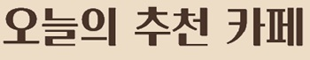

Find your favorite cafe mood
당신의 일상에 완벽한 쉼표가 되는 공간,
CAFE ARCHIVE에서 시작됩니다.
우리는 저마다 다른 이유로 카페를 찾습니다. 때로는 통창 너머로 부서지는 햇살과 푸른 자연을 보며 머리를 비우기 위해, 때로는 입안 가득 행복을 전하는 정교한 디저트 한 입의 위로를 위해, 또 어떤 날에는 깊은 밤 홀로 고요한 사색의 시간을 아지트 같은 공간에서 즐기기 위해 발걸음을 옮기곤 합니다. 좋은 공간이 주는 힘은 단순히 음료 한 잔을 마시는 행위를 넘어, 우리의 하루를 위로하고 새로운 영감을 불어넣어 줍니다.
CAFE ARCHIVE는 무분별한 광고성 정보 속에서, 당신의 소중한 시간과 취향을 지켜드리기 위해 탄생한 카페 큐레이션 페이지입니다. 수많은 카페 중에서도 독보적인 감성을 지닌 '분위기 좋은 공간', 계절의 변화를 한눈에 담는 '아름다운 뷰를 품은 곳', 특별한 디저트가 있는 '디저트 맛집', 오감을 자극하는 '독특한 컨셉의 카페', 그리고 늦은 밤 안식처가 되어주는 '새벽 심야 카페'까지. 5가지 명확한 테마를 기준으로 서울과 경기권의 숨은 보석 같은 공간들을 엄선하여 기록합니다.
지금부터, CAFE ARCHIVE가 정성스럽게 엮어낸 리스트를 통해 당신의 취향에 꼭 들어맞는 인생 카페를 발견하고, 그곳에서 당신만의 특별한 순간을 기록해 보세요.